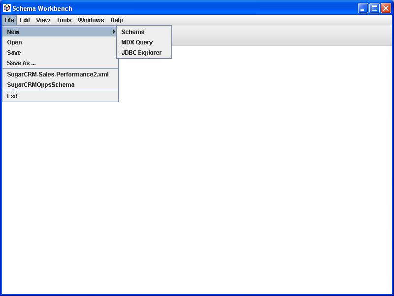

Edit or create your equivalent of the demo/workbench.bat script, which sets the classpath for the workbench. Include drivers for your database on the classpath.
Run the script to start the workbench.
In windows:@echo off rem base Mondrian JARs set CP=../lib/commons-dbcp.jar;../lib/commons-collections.jar;../lib/commons-pool.jar set CP=%CP%;../lib/eigenbase-properties.jar;../lib/eigenbase-resgen.jar;../lib/eigenbase-xom.jar set CP=%CP%;../lib/javacup.jar;../lib/log4j-1.2.9.jar;../lib/mondrian.jar set CP=%CP%;../lib/jlfgr-1_0.jar;../lib/jmi.jar;lib/mof.jar;../lib/commons-math-1.0.jar set CP=%CP%;../lib/commons-vfs.jar;../lib/commons-logging.jar rem Workbench GUI code and resources set CP=%CP%;../lib/workbench.jar rem add all needed JDBC drivers to the classpath set CP=%CP%;../testlib/mysql-connector-java-3.1.11-bin.jar set CP=%CP%;../testlib/postgresql-driver-jdbc3-74-214.jar rem set the log4j.properties system property "-Dlog4j.properties=<.properties or .xml file>" rem in the java command below to adjust workbench logging java -Xms100m -Xmx500m -cp "%CP%" mondrian.gui.Workbench
In UNIX/Linux:
java -jar lib/workbench.jar mondrian.gui.Workbench
Set properties for
connection to your cube database via Tools > Preferences.

These preferences and the last 4 schemas edited are kept in a "workbench.properties" file in the root of the classpath.
If you change the connection properties, you will need to close/save the existing schema editor(s) and restart to see the effects.
Create a new schema or open an existing one.
If you open an existing schema, the Workbench validates that the tables and columns underlying the cube definitions actually exist in the database.

Create or edit elements in the schema. The Workbench validates your changes against the cube database tables and column names.

The Workbench validates edits against the Mondrian schema DTD.

Save your schema and run some MDX queries to test. Error messages and results are displayed.

{kind=link}